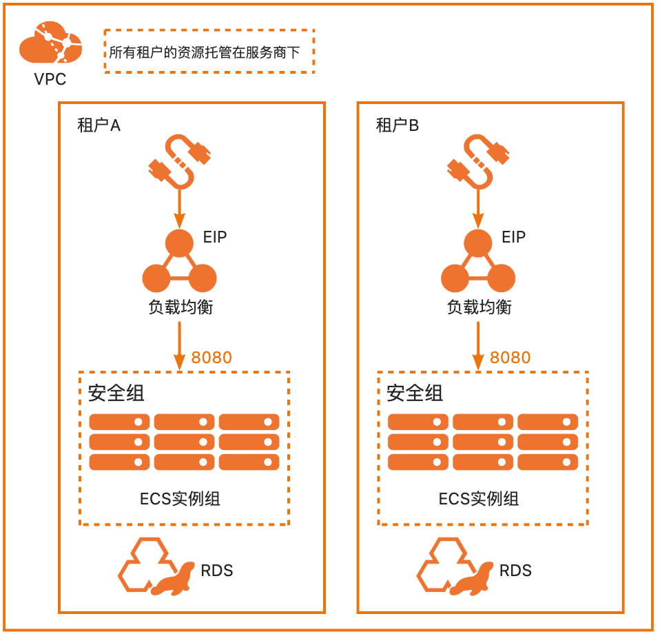

服务模板说明文档
服务说明
本文介绍基于WordPress软件包快速构建托管版单租户计算巢服务，关于计算巢托管版可以参考帮助文档， 本示例采用ECS+SLB+EIP的高可用架构。规格参数都可以由租户自行选择。
本示例对应的Git仓库地址：wordpress-managed-demo。
本示例会自动的构建计算巢服务，具体的服务构建流程为:
- 将WordPress安装包（提前存放到该github repo中）构建为计算巢文件部署物。
- 创建计算巢服务并关联文件部署物。
创建过程大约持续3分钟，当服务变成待提交后构建成功。
部署架构
本部署架构为EIP+SLB+ECS+RDS，安全组开放租户指定的Wordpress（默认为8080）端口，通过公网EIP进行访问，架构图： 
服务构建计费说明
测试本服务构建无需任何费用，创建服务实例涉及的费用参考服务实例计费说明。
服务实例计费说明
测试本服务在计算巢上的费用主要涉及：
- 所选vCPU与内存规格
- 系统盘类型及容量
- 负载均衡规格
- 公网带宽
- 私网连接费用
计费方式包括：
- 按量付费（小时）
- 包年包月
部署流程
部署参数说明
| 参数组 | 参数项 | 示例 | 说明 |
|---|---|---|---|
| 服务实例名称 | test | 实例的名称 | |
| 资源组和地域 | 资源组 | 默认资源组 | 创建的服务实例位于的资源组。 |
| 资源组和地域 | 地域 | 华东1（杭州） | 选中服务实例的地域，建议就近选中，以获取更好的网络延时。 |
| 付费类型配置 | 付费类型 | 按量付费 或 包年包月 | |
| ECS实例配置 | 实例类型 | ecs.gn6i-c4g1.xlarge | 实例规格，可以根据实际需求选择。 |
| ECS实例配置 | 系统盘空间 | 40 | 系统盘大小，可以根据实际需求选择。 |
| ECS实例配置 | 流量付费类型 | PayByTraffic | 流量付费类型，可以根据实际需求选择。 |
| ECS实例配置 | 流量公网带宽 | 10 | 流量公网带宽，可以根据实际需求选择。 |
| ECS实例配置 | 实例密码 | * | 设置实例密码。长度830个字符，必须包含三项（大写字母、小写字母、数字、()`!@#$%^&*-+={}[]:;'<>,.?/ 中的特殊符号）。 |
| 负载均衡配置 | 负载均衡实例规格 | slb.s2.small | 负载均衡实例规格，可以根据实际需求选择。 |
| 数据库配置 | 实例系列 | 高可用版 | RDS实例系列，可以根据实际需求选择。 |
| 数据库配置 | 实例规格 | mysql.n2.medium.1 | RDS实例规格，可以根据实际需求选择。 |
| 数据库配置 | 实例存储 | 50 | RDS实例大小，可以根据实际需求选择。 |
| 数据库配置 | 数据库名 | wordpress | WordPress数据库名。 |
| 数据库配置 | 数据库账号 | wpuser | WordPress数据库账号。 |
| 数据库配置 | 数据库密码 | ** | 设置实例密码。长度830个字符，必须包含三项（大写字母、小写字母、数字、()`!@#$%^&*-+={}[]:;'<>,.?/ 中的特殊符号）。 |
| WordPress配置 | WordPress 监听端口号 | 8080 | WordPress网站监听端口号。 |
| 可用区配置 | 部署区域 | 可用区I | 地域下的不同可用区域。 |
| 选择已有基础资源配置 | VPC ID | vpc-xxx | 选择专有网络的ID。 |
| 选择已有基础资源配置 | 交换机ID | vsw-xxx | 选择交换机ID。若找不到交换机, 可尝试切换地域和可用区。 |
部署步骤
- 部署链接。

- 单击部署链接，进入服务实例部署界面，根据界面提示，填写参数完成部署。

- 参数填写完成后可以看到对应参数，确认参数后点击立即创建，进入部署阶段。

 3. 租户侧可以看到服务实例处于待部署状态。
3. 租户侧可以看到服务实例处于待部署状态。
 4. 服务商可以点击部署，开始进入部署阶段。
4. 服务商可以点击部署，开始进入部署阶段。


 5. 等待部署完成后就可以开始使用服务，打开浏览器访问WordPress主页，输入用户名和密码即可访问WordPress网站。
5. 等待部署完成后就可以开始使用服务，打开浏览器访问WordPress主页，输入用户名和密码即可访问WordPress网站。


服务详细说明
本文提前将WordPress安装包存放到该Github Repo中，构建服务过程中会将该安装包发布为计算巢部署物，并在ROS模板写入安装指令，ROS模板引擎在执行时便会自动执行安装了。
# 安装wordPress
wget '{{ computenest::file::wordpress }}' -O wordpress-6.2-zh_CN.tar.gz
tar -xvf wordpress-6.2-zh_CN.tar.gz
cp wordpress/wp-config-sample.php wordpress/backup-wp-config.php
sed -i 's/database_name_here/${DBName}/' wordpress/wp-config-sample.php
sed -i 's/username_here/${DBUser}/' wordpress/wp-config-sample.php
sed -i 's/password_here/${DBPassword}/' wordpress/wp-config-sample.php
sed -i 's/localhost/${DBConnectString}/' wordpress/wp-config-sample.php
mv wordpress/wp-config-sample.php wordpress/wp-config.php
cp wordpress/backup-wp-config.php wordpress/wp-config-sample.php
cp -a wordpress/* $WebRootPath
rm -rf wordpress*
usermod -d $WebRootPath apache &>/dev/null
chown apache:apache -R $WebRootPath
chmod -R 755 $WebRootPath/wordpress
sed -i "s/$ApacheIndex/$ApacheIndexReplace/" /etc/httpd/conf/httpd.conf
systemctl restart httpd
{{ computenest::file::wordpress }} 为占位符，会由计算巢服务替换成文件部署物wordpress的http下载地址。
文件说明：
| 文件路径 | 说明 |
|---|---|
| config.yaml | 构建服务的配置文件，服务构建过程中会使用计算巢命令行工具computenest-cli，computenest-cli会基于该配置文件构建服务。 |
| parameters.yaml | 本服务为托管版单租，使用该文件渲染服务商需要配置的网络参数，包括VpcId，VSwitch等。 |
| artifact/wordpress-6.2-zh_CN.tar.gz | wordpress，构建过程会将该包发布为计算巢部署物。 |
| icons/service_logo.jpg | 构建服务默认的图标。 |
| templates/parameters.yaml | 本服务为托管版单租服务，所以只需要用户填写一部分参数，通过该文件指定用户所填参数。 |
| templates/template.yaml | ROS模板文件，ROS模板引擎根据该模板能够自动创建出所有的资源。 |
© 2009-2022 Aliyun.com 版权所有